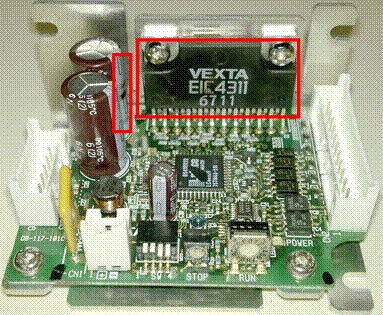
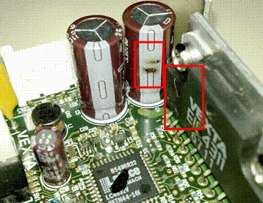

Service History
Subject: Input Hand A Device pickup error
Handler Model: NS-8040 (H52-NS84, S/N: 181207)
Controller: RC520
Date: 17 Dec 2009
Symptom
- Input Hand A device pick up error occur during production
- Upon pressing “retry”, handler tripped
- Able to power on the handler but front & rear control panel unable to access.
- Check all fuse – OK
- Reset all circuit breakers and tried power on – OK
- Handler able to power on and home – OK
- Upon dummy cycle burning smell came off from stepping drivers drv area
- Burning smell was from Stepper Driver DRV12
|
 |
 |
Action
Stepper(Stepping) Driver DRV12 burnt
Input Hand A motor rough movement
Input Hand A Stepper Motor burning smell.
Input Hand A wiring check.
30 Dec 2009
1) Replaced stepper motor for Input Arm Hand A.
2) Replaced stepping motor driver.
3) Repaired Hand A stepper motor wiring as seen wire burnt.
4) Power on handler, perform hand height calibration, OK.
5) Start handler, encounter ODBC microsoft windows error.
6) Performed HDD recovery, Installed HMI ver. 2.5 and restored handler data.
7) Cycle run handler OK.
Cause
Faulty:
1) Stepper Driver DRV12
1) Stepper Motor for Hand A
Remarks
For the above ODBC microsoft windows error, Handler database could be corrupted.
Refer 0045-NS8K or 0253-NS8K or 0308-NS8K.